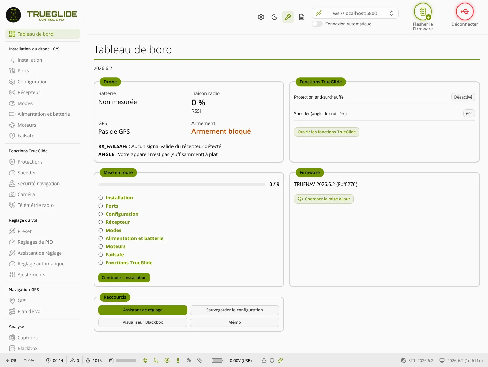
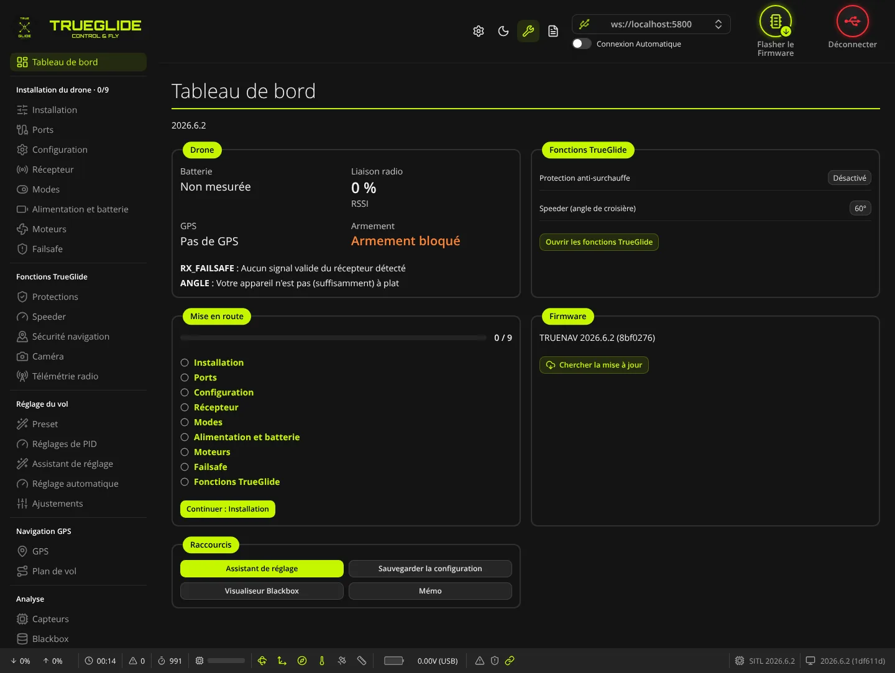
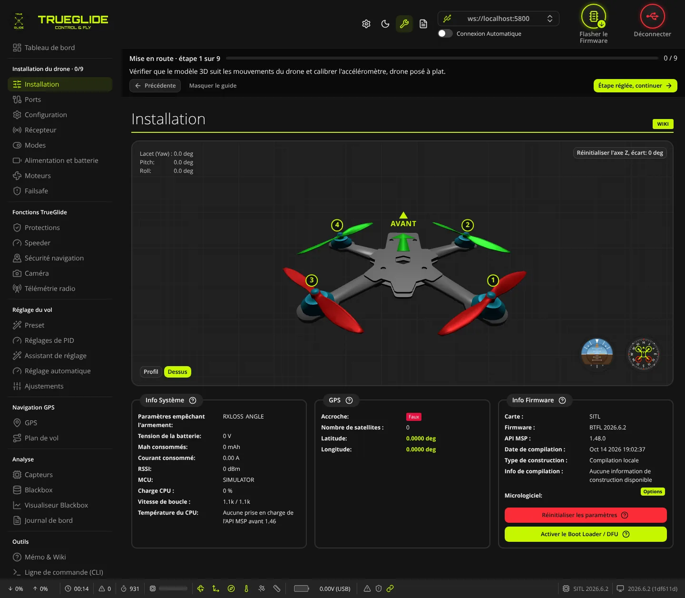
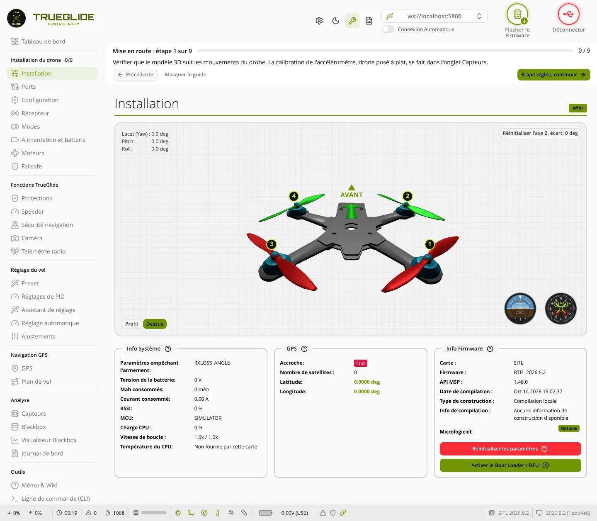
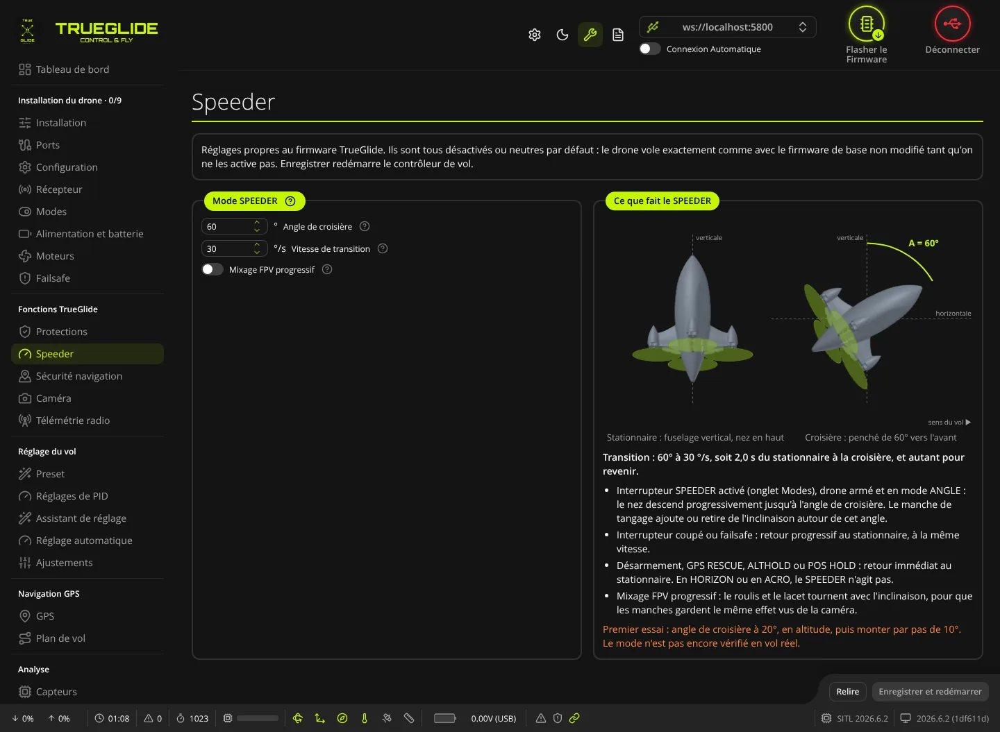
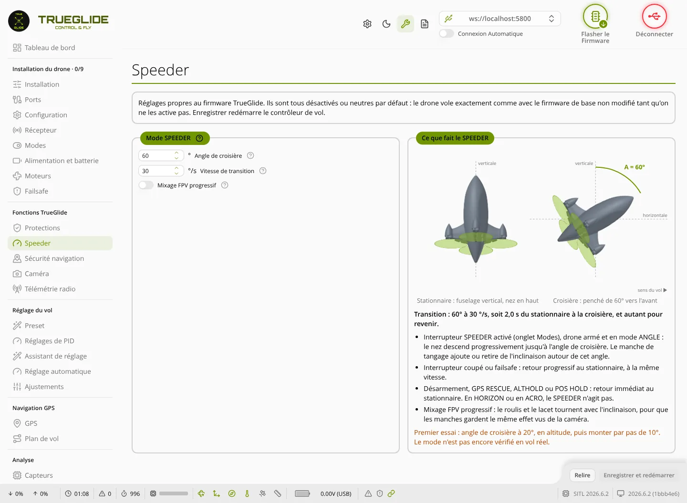
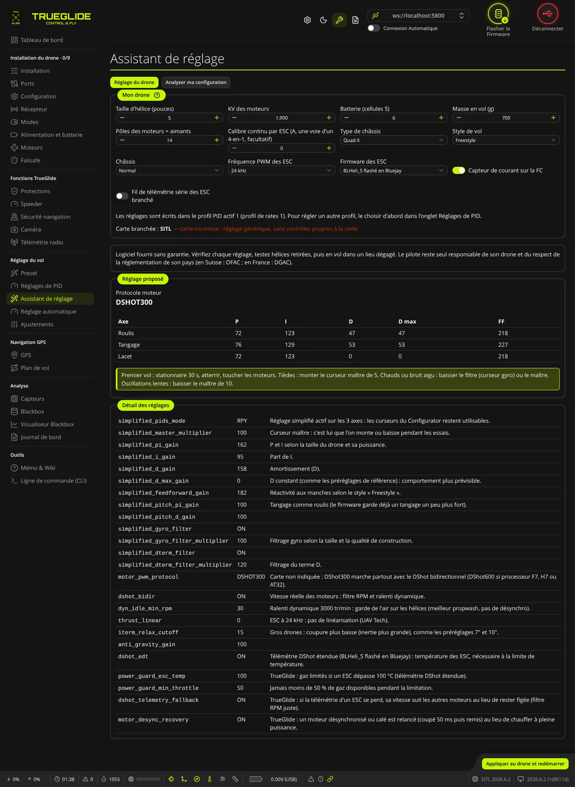
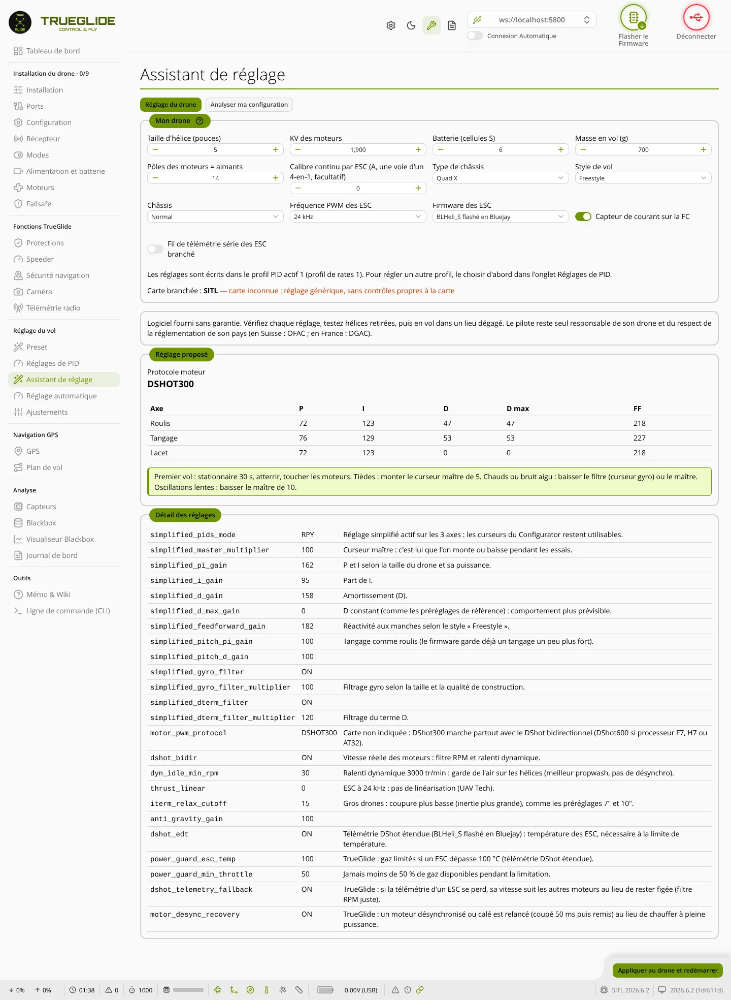
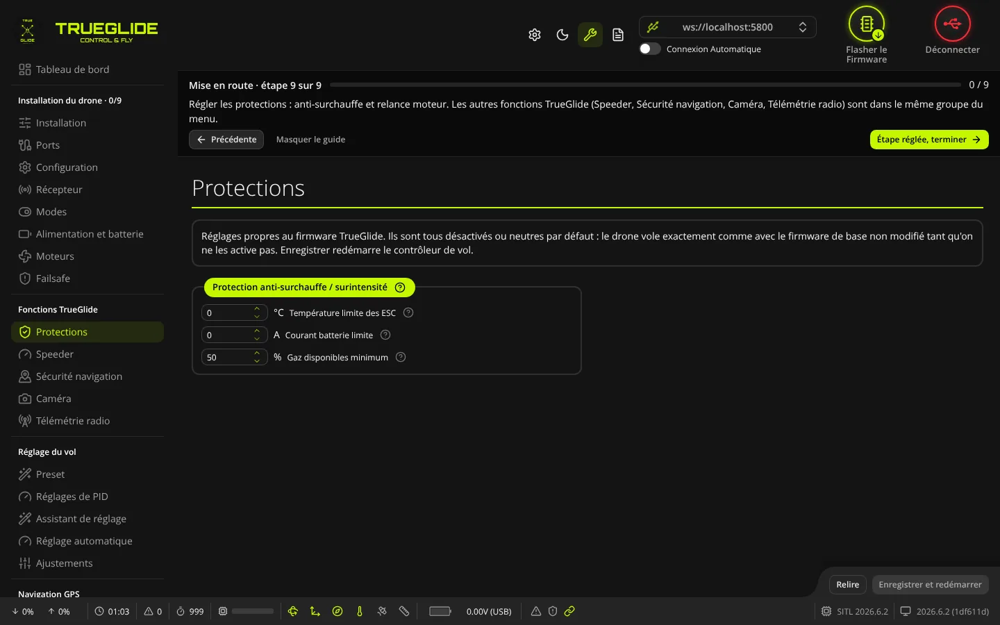
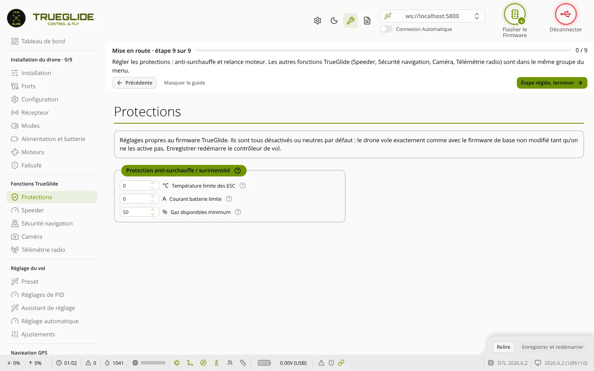

TRUEGLIDE est un firmware de contrôleur de vol gratuit et libre, basé sur Betaflight 2026.6.2, avec son logiciel de réglage TRUEGLIDE CONFIGURATOR. Le firmware ajoute des protections pour le matériel (surchauffe, courant, relance des moteurs), le mode SPEEDER et, avec TRUENAV, la navigation GPS. Sans réglage, il vole comme Betaflight. Le logiciel prépare et règle votre drone dans le navigateur, même carte débranchée, et règle aussi les cartes sous Betaflight.
Branchez votre carte une seule fois pour la lire. Vous pouvez ensuite ajuster tous vos onglets sans câble, où vous voulez, et appliquer les changements au prochain branchement.
Profitez d'un préréglage de départ calculé spécifiquement pour la taille, le poids et les moteurs de votre drone, avec chaque valeur expliquée.
Flashez vos ESC (Bluejay, BLHeli_S, AM32) directement dans l'interface, suivez un guide de mise en route en 9 étapes et testez vos moteurs en toute sécurité avec une limite automatique à 30 % des gaz.


Tout est désactivé par défaut : chaque ajout ne fait rien tant qu'on ne l'active pas. Les chiffres ci-dessous sont lus dans le code ou mesurés ; aucun n'est encore mesuré en vol réel.
Limite les gaz si un ESC chauffe trop ou si le courant de la batterie dépasse une limite. Les corrections PID ne sont jamais limitées.
Pour les speeders qui décollent fuselage vertical : le nez descend progressivement jusqu'à l'angle de croisière, en mode ANGLE.
Relance un moteur désynchronisé ou calé, et garde une vitesse juste pour le filtre RPM quand la télémétrie DShot se perd.
Missions par points, maintien d'altitude et de position, retour à la maison, zone de vol, missions envoyées par MAVLink.
TRUEGLIDE se compile pour les cartes de Betaflight. Version d'essai en ligne depuis le 03/11/2026 pour 33 cartes (SpeedyBee, Mamba, Matek, Kakute, JHEMCU, Foxeer, Flywoo, GEPRC, BetaFPV, iFlight, T-Motor, Hobbywing…) ; les autres cartes suivront après les essais en vol des fonctions TrueGlide.
TrueGlide Configurator : mise en route guidée, assistant de réglage, onglets TrueGlide, et une page de documentation par onglet.
Le logiciel de réglage, en français, dans le navigateur. Il règle les cartes sous TRUEGLIDE et sous Betaflight. Les fonctions ci-dessous sont essayées avec une vraie carte (SpeedyBee F405 Mini).
Préparer son drone sans le brancher : le logiciel récolte une copie de la carte, puis tous les onglets se règlent sur cette copie, à la maison ou au terrain. Avant l'envoi à la vraie carte : sauvegarde de la carte, liste de ce qui partira, question à part pour les réglages à risque, puis relecture. Jusqu'à 3 cartes gardées. Fonctionne avec les cartes sous TRUEGLIDE et sous Betaflight.
Un réglage de départ calculé selon la taille, le poids, la batterie et les moteurs du drone. Chaque valeur est expliquée, avec les réglages de référence d'où elle vient. Prépare aussi les ports et contrôle les broches de la carte.
Un guide en haut de l'écran conduit, onglet par onglet, de l'installation au failsafe : ce qu'il faut vérifier, puis « Étape réglée, continuer ».
Onglet Moteurs : les curseurs s’arrêtent à 30 % des gaz, assez pour voir le sens et l'ordre des moteurs. La case est cochée à chaque ouverture ; la lever demande une confirmation, la recocher arrête les moteurs.
Régler et flasher les ESC Bluejay, BLHeli_S et AM32 par la carte de vol, sans quitter le logiciel.
Mise à jour en ligne : le fichier est vérifié (taille et somme SHA-256) avant le flash, avec un avertissement si la carte ne correspond pas. Plan de vol sur carte satellite, avec les mètres et les km/h à côté des pieds et des nœuds.
TrueGlide Configurator s'ouvre dans Chrome ou Edge, sans rien installer. Captures du vrai logiciel, connecté au simulateur.








Avant de flasher, sauvegarder la configuration de la carte : diff all et dump all dans l'onglet CLI.
diff all.Chaque étape est notée avec son résultat. Premier vol du firmware corrigé réussi ; les fonctions TrueGlide sont en cours d'essai en vol.
Une page par onglet du logiciel, dans l'ordre du menu.
Des produits séparés, qui travaillent ensemble. La sécurité est le maître mot de chacun.
Le firmware de vol, avec ses modèles TRUENAV (navigation GPS) et TRUENAV_LIGHT. Tout ajout est désactivé par défaut.
Le logiciel de réglage, en français, dans le navigateur : mise en route guidée, assistant de réglage, onglets TrueGlide.
Pour régler et flasher les ESC Bluejay, BLHeli_S et AM32 par la carte de vol. Logiciel séparé, libre (licence AGPL v3), dérivé d'ESC Configurator.
Préparer un drone, même carte débranchée : réglage de départ, ports, contrôle des broches, fichier drone. Dans TRUEGLIDE CONFIGURATOR (onglet Studio), qui envoie ensuite les commandes à la carte.
Le configurateur pour concevoir son drone avant de le construire : composants, vitesse, poussée et autonomie estimées. Une étude XRIG s'ouvre dans TRUEGLIDE STUDIO pour préparer le réglage.
La gamme avancée, pour aller plus loin : plus de réglages et plus de fonctions, dont l'analyse des journaux Blackbox. Produit séparé de TRUEGLIDE.
 TRUE
TRUE